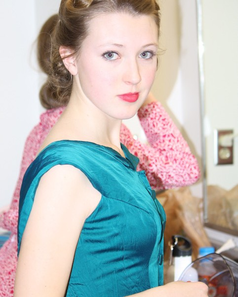

April 6, 2017
Sustainable Fashion

Sustainable Fashion
We like our fashion, but did you know the average American throws away nearly 70 pounds of clothing per year? So, it really makes sense to pay attention to the environmental impact of the materials that make up your fashion choices. For instance, most people think of cotton as a “natural” product. The reality: Cotton is one of the most chemically intensive crops in the world. Defoliants are used to kill the leaves on cotton plants before the harvest and according to the U.S. Department of Agriculture, 84 million pounds of pesticides were applied to the nation’s cotton fields in the year 2000. That is in addition to the more than two billion pounds of fertilizers on those same fields.
So what should you look for on the label? Here’s a link to a great guide http://www.manrepeller.com/2016/06/sustainable-fashion-materials.html and a quick summary of some good suggestions:
Summer: Choose Linen, Hemp, and Organic Cotton over Cotton. Organic cotton is grown without pesticides or fertilizers, and help and linen don’t need them in the first place, and require very little water.
Winter: Choose Alpaca over Cashmere. The goats used to make Cashmere pull out grasses by the roots and damage ecosystems by over-grazing. Alpaca just eat and drink very little, and just graze on the tops of the grass.
Athletic Wear, Swimwear, Outerwear: Choose recycled post-consumer PET over Polyester and wash all your synthetic fibers in a zipper bag to prevent micro fibers from entering the water system.
Eveningwear: Choose Silk, it is 100% natural and has a very low environmental impact. You might just find the perfect vintage dress like Finley is sporting in the photo here.